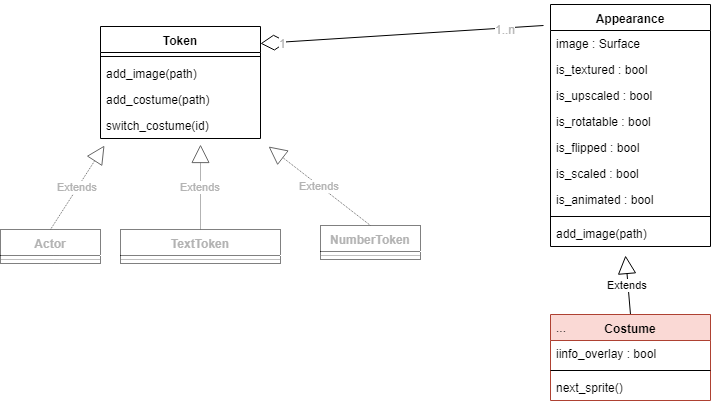

8. Costumes and Background¶
8.1. Costumes¶
Each actor has one or more costumes.
A costume consists of one or more pictures and instructions on how to display them.

8.1.1. Add images to a costume:¶
Add a new image to a costume:
self.add_image("image.jpg")
In the same way you can also add several pictures to a costume:
self.add_image("image1.jpg")
self.add_image("image2.jpg")
8.2. Representation of pictures¶
The following instructions change the appearance of costumes:
8.2.1. Info Overlay¶
Shows an info overlay with frame and direction above the token.
8.2.2. is_rotatable¶
Specifies whether the image is rotated with the direction of the actor.
8.2.3. is_upscaled¶
Specifies whether the image should be upscaled to the size of the token. This action maintains the ratio between length and width.
8.2.4. is_scaled¶
Specifies whether the image should be upscaled to the size of the token. This action may change the size ratio between length and width.
8.2.5. is_textured¶
In addition to scale and upscale, there is also the option to “wallpaper” the background with an image for backgrounds.
8.3. Create multiple costumes¶
You can create several costumes as follows:
my_costume = self.add_costume("image.png")
A new costume is created with the image image.png. You can also add more pictures to the costume:
my_costume.add_image("image2.png")
8.4. Switching between costumes¶
Here’s how you switch between two costumes:
self.switch_costume()
The instruction jumps to the next costume. You can also specify a number as a parameter to jump to a specific costume.